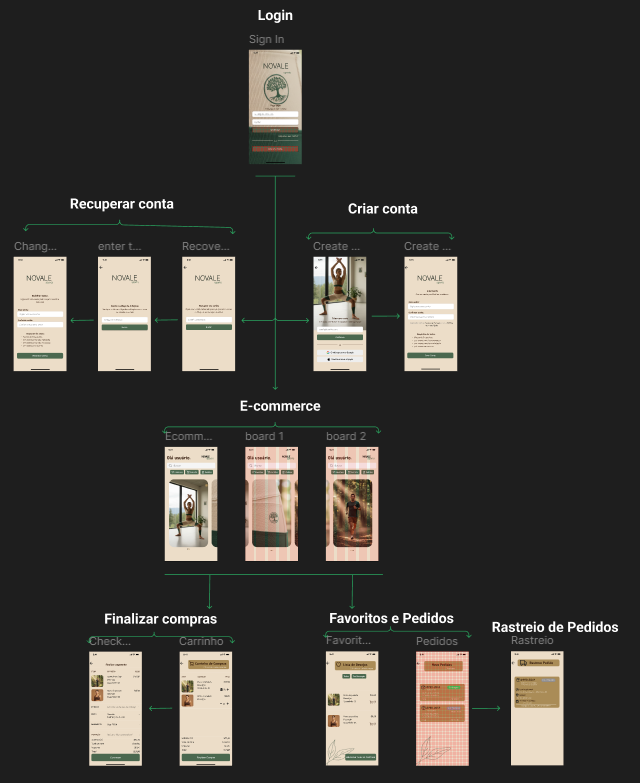

ESTUDO DE CASO • 2026

Prototipação de Alta Fidelidade — Sistema de E-commerce
Projeto de prototipação de alta fidelidade de um sistema de e-commerce, conduzido desde a fase de descoberta até a construção do protótipo interativo no Figma. O processo iniciou com a definição dos stakeholders do projeto e a criação de persona utilizando mapa de empatia, identificando o que o usuário-alvo pensa, sente, escuta, fala, faz, além de suas dores e ganhos, para fundamentar as decisões de design na realidade do público. A partir dessa análise, foram levantados os requisitos funcionais (cadastro e autenticação de usuário com possibilidade de alteração de senha, catálogo de produtos com carrossel de imagens, carrinho de compras com adição/remoção de itens, fluxo de finalização de compra) e os requisitos não funcionais (usabilidade, responsividade, consistência visual). Com a especificação definida, foram projetadas as telas principais da aplicação e o fluxo de navegação entre elas, simulando a jornada completa do usuário desde o cadastro até a conclusão do pedido.
O DESAFIO DO PROJETO
O principal desafio do projeto foi o aprendizado da ferramenta Figma como instrumento de prototipação de software conhecimento que hoje aplico profissionalmente na validação de telas de IHM (Interface Homem-Máquina) com clientes na área de automação industrial. Além do domínio da ferramenta, o projeto consolidou a compreensão de que o desenvolvimento de software deve partir da identificação de quem são os usuários do sistema, para então derivar os requisitos de forma fundamentada. Nesse processo, ficou clara a distinção entre requisitos funcionais que descrevem o que o sistema faz do ponto de vista do usuário (ex: adicionar item ao carrinho, alterar senha) e requisitos não funcionais, que definem os atributos de qualidade do sistema, como desempenho, usabilidade e segurança, e que orientam as decisões de arquitetura.
EQUIPE
Isabelle Trampusch